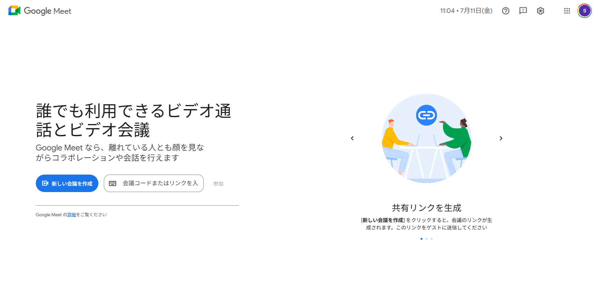
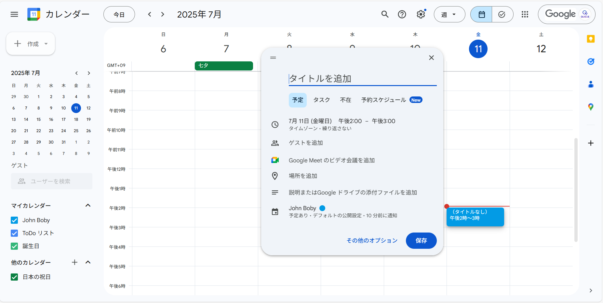
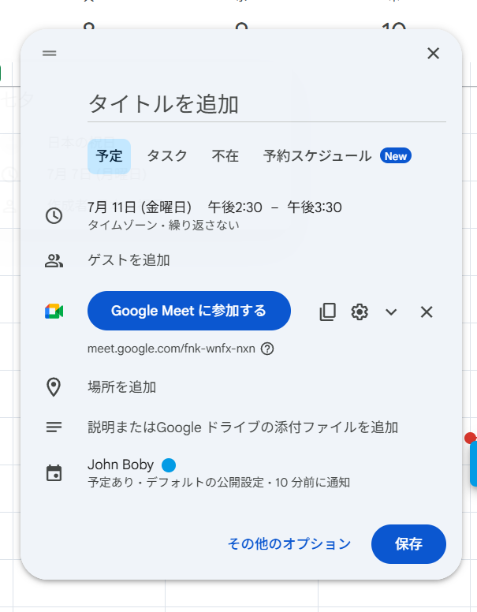
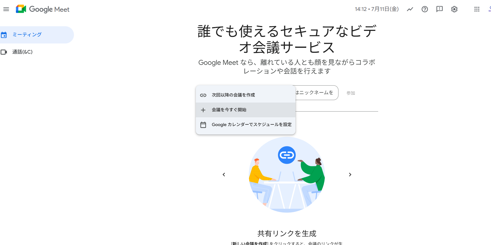
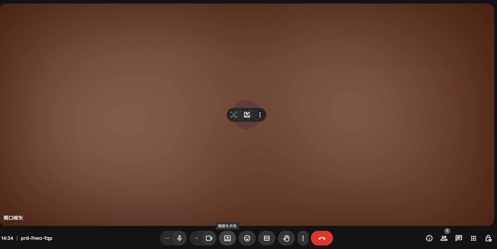
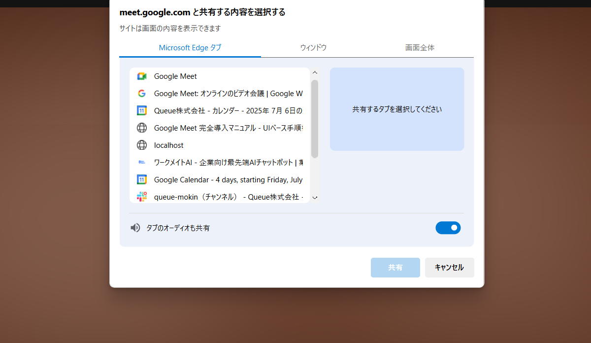
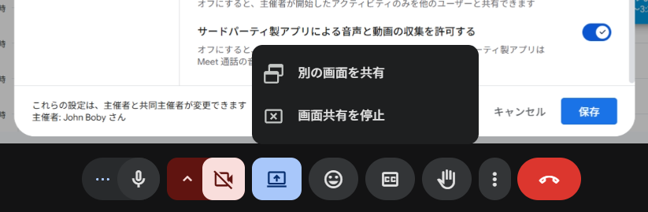
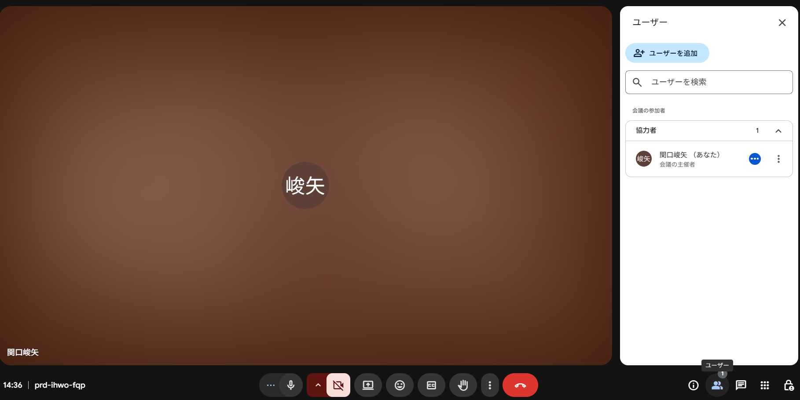

Google Meet 完全導入マニュアル
UIベース手順書（スクリーンショット付き）
目次
- 導入概要と目的
- 事前準備とアクセス方法
- 会議の開始方法（2つのパターン）
- カレンダーからの予約型会議
- 即席会議（今すぐ作成）
- 招待リンクの共有と参加者承認
- 画面共有（プレゼンテーション）機能
- 会議中の主要コントロール機能
- 高度な機能と設定
- トラブルシューティング
- セキュリティとベストプラクティス
1. 導入概要と目的
Google Meet は Google Workspace に統合されたビデオ会議ツールです。本マニュアルでは、Google Meet を標準のオンライン会議ツールとして活用し、アカウント管理やセキュリティを Workspace に一本化するための手順を詳しく解説します。
主な特徴
- ブラウザベース：専用アプリのインストール不要
- 時間制限：Google Workspace アカウントでは実質無制限
- セキュリティ：エンドツーエンド暗号化対応
- 統合性：Google カレンダー、Gmail との完全統合
- 参加者数：最大500名（プランによる）
動作環境
本マニュアルは以下の環境を前提として記載しています：
- PC ブラウザ（Google Chrome 推奨）
- Google Workspace アカウント
- 安定したインターネット接続（推奨：上り下り 1Mbps 以上）
2. 事前準備とアクセス方法
Google Meet への基本アクセス
Google Meet にアクセスするには、ブラウザで以下の URL を開きます：
https://meet.google.com/landing

ヒント：Chrome ブラウザをお使いの場合、Google Meet は最適化されており、追加の設定なしで高品質な会議を行うことができます。
権限設定の確認
初回利用時には、以下の権限を許可する必要があります：
- カメラ：ビデオ通話のため
- マイク：音声通話のため
- 通知：会議の開始通知のため
注意：権限が拒否されている場合、ブラウザのアドレスバー左側にある鍵アイコンをクリックして、カメラとマイクの設定を「許可」に変更してください。
3. 会議の開始方法（2つのパターン）
Google Meet で会議を開始する方法には、主に2つのパターンがあります。これらは代替手段であり、状況に応じて使い分けることができます。
パターン A：カレンダーからの予約型会議
事前に会議を予約し、参加者に招待を送信する方法です。定期的な会議や重要な会議に適しています。
手順 1：Google カレンダーを開く
ブラウザで Google カレンダー（https://calendar.google.com）を開き、ログインします。

手順 2：新しいイベントを作成
カレンダー画面の左上にある ＋ 作成 ボタンをクリックします。

手順 3：会議詳細を入力
- タイトル：会議の件名を入力
- 日時：開始時間と終了時間を設定
- 場所：必要に応じて会議室情報を入力
手順 4：Google Meet を追加
イベント作成画面で 「Google Meet のビデオ会議を追加」 をクリックします。会議リンクが自動的に生成されます。

手順 5：参加者を招待
「ゲスト」 欄に参加者のメールアドレスを入力します。複数の参加者を追加する場合は、カンマで区切って入力します。
手順 6：保存と送信
保存 → 送信 をクリックして、参加者に招待メールを送信します。
パターン B：即席会議（今すぐ作成）
すぐに会議を開始したい場合に使用する方法です。緊急の会議や短時間の打ち合わせに適しています。
手順 1：Google Meet を開く
ブラウザで https://meet.google.com を開きます。
手順 2：新しい会議を作成
画面右側の 「新しい会議」 ボタンをクリックし、「今すぐ作成」 を選択します。
手順 3：会議ルームに入室
カメラとマイクの設定を確認し、「今すぐ参加」 をクリックして会議ルームに入室します。
手順 4：会議情報を取得
入室後、画面右下の 「会議の詳細 (ℹ︎)」 をクリックし、「参加に必要な情報をコピー」 を選択して、会議 URL と会議コードを取得します。

手順 5：参加者を招待
取得した URL またはコードを、チャットやメールで参加者に共有します。
4. 招待リンクの共有と参加者承認
会議への参加方法と、ホストとしての参加者承認プロセスについて詳しく説明します。
招待リンクの共有方法
| 共有方法 |
使用場面 |
手順 |
| メール |
正式な会議招待 |
カレンダーの招待機能を使用 |
| チャット |
即席会議 |
会議 URL をコピー&ペースト |
| 会議コード |
電話での案内 |
10桁の会議コードを伝達 |
参加者承認プロセス
ホスト側の操作
手順 1：参加リクエストの通知
参加者が会議に参加しようとすると、画面に参加リクエストのポップアップが表示されます。
手順 2：参加者の承認
参加者の名前を確認し、「承認」 ボタンをクリックして入室を許可します。

手順 3：参加者の管理
参加者一覧から、個別の参加者に対して以下の操作が可能です：
- マイクのミュート/ミュート解除
- カメラの無効化
- 会議からの退出
参加者側の操作
手順 1：会議への参加
受信した URL をクリックするか、meet.google.com で会議コードを入力します。
手順 2：参加リクエスト
「参加をリクエスト」 ボタンをクリックして、ホストの承認を待ちます。
手順 3：会議への入室
ホストが承認すると、自動的に会議に接続されます。
効率化のヒント：社内の定例会議では、会議設定で「クイック アクセス」を ON にすることで、参加リクエストを省略して即座に入室できます。
5. 画面共有（プレゼンテーション）機能
Google Meet の画面共有機能は、プレゼンテーションやデモンストレーションを行う際に重要な機能です。
画面共有の開始手順
手順 1：画面共有の開始
会議画面下部のツールバーにある 🖥️「画面を共有」 アイコンをクリックします。

手順 2：共有対象の選択
以下の3つのオプションから共有したい対象を選択します：
- 画面全体：デスクトップ全体を共有
- ウィンドウ：特定のアプリケーションウィンドウのみ共有
- Chrome タブ：ブラウザの特定のタブのみ共有

手順 3：共有の開始
共有したい対象を選択し、「共有」 ボタンをクリックします。
画面共有中の操作
共有の制御
画面共有中は、以下の操作が可能です：
- 音声の共有：システム音声も一緒に共有
- ポインターの表示：マウスカーソルを強調表示
- 画質の調整：共有品質の変更
手順 4：共有の停止
共有を停止する場合は、以下のいずれかの方法を使用します：
- ツールバー上部の 「共有を停止」 ボタンをクリック
- ブラウザのポップアップで 「停止」 をクリック

画面共有のベストプラクティス
効果的な画面共有のコツ：
- 共有前に不要なアプリケーションを閉じる
- プレゼンテーション用の画面解像度に調整する
- プライベートな通知を無効にする
- 重要な部分はズーム機能を活用する
6. 会議中の主要コントロール機能
会議中に使用できる主要なコントロール機能について、詳細な機能説明とキーボードショートカットを含めて解説します。
基本コントロール
| アイコン |
機能 |
詳細説明 |
キーボードショートカット |
| 🎙️ |
マイク |
音声の ON/OFF 切替。ミュート時は赤色で表示 |
Ctrl + D |
| 🎥 |
カメラ |
ビデオの ON/OFF 切替。無効時は斜線が表示 |
Ctrl + E |
| 💬 |
チャット |
テキストチャットパネルの開閉 |
Ctrl + Alt + C |
| 🖥️ |
画面共有 |
画面共有の開始・停止 |
Ctrl + Alt + P |
| CC |
字幕 |
自動字幕の ON/OFF（英語・日本語対応） |
Ctrl + Alt + C |
| ⏹ |
退出 |
会議からの離脱 |
Ctrl + Alt + Q |
高度なコントロール機能
参加者管理
参加者一覧の表示
画面右側の 「参加者を表示」 アイコンをクリックすると、参加者一覧が表示されます。

参加者の個別制御
ホストは各参加者に対して以下の操作が可能です：
- マイクのミュート：参加者の音声を無効化
- カメラの停止：参加者のビデオを無効化
- 会議からの退出：参加者を会議から退出させる
- 共同ホスト権限の付与：他の参加者にホスト権限を移譲
チャット機能
チャットの使用
会議中のテキストコミュニケーションに使用します：
- 全員へのメッセージ：すべての参加者に表示
- 個人へのメッセージ：特定の参加者のみに送信
- ファイルの共有：ドキュメントや画像の共有
- リンクの共有：URL の自動リンク化
レコーディング機能
会議の録画
Google Workspace Business Standard 以上のプランで利用可能：
- 録画の開始：メニューから「録画を開始」を選択
- 録画の停止：録画中に「録画を停止」をクリック
- 録画の保存：Google Drive に自動保存
- 録画の共有：Drive リンクとして共有可能
注意：録画機能は有料プランでのみ利用可能です。録画を開始する前に、参加者全員に録画の同意を得ることが重要です。
アクセシビリティ機能
自動字幕機能
字幕の設定
聴覚に障害のある参加者や、音声が聞き取りにくい環境での会議に有効です：
- 自動字幕：AI による音声認識で字幕を自動生成
- 言語設定：日本語、英語など複数言語に対応
- 字幕の位置：画面下部に表示
- 字幕の保存：会議後に字幕データの保存が可能
キーボードナビゲーション
キーボードのみで会議を操作することが可能です：
- Tab キー：UI 要素間の移動
- Enter キー：選択した要素の実行
- Escape キー：ダイアログの閉じる
- スペースキー：一時的なマイクミュート解除
7. 高度な機能と設定
会議の詳細設定
会議室の設定
会議の開始前または進行中に、以下の設定を調整できます：
- 待機室の有効化：参加者を待機室で待機させる
- ノックの無効化：承認なしでの入室を許可
- チャットの制限：チャット機能の使用制限
- 画面共有の制限：ホストのみ画面共有を許可
品質設定の調整
ビデオ品質の設定
ネットワーク環境に応じて、ビデオ品質を調整できます：
- 自動：ネットワーク状況に応じて自動調整
- 高品質：720p HD での配信
- 標準：480p での配信
- 低品質：240p での配信（帯域制限時に有効）
音声設定の調整
音声品質の最適化のための設定：
- ノイズキャンセル：背景雑音の除去
- 音声レベル調整：マイク感度の調整
- エコー除去：音声のエコー防止
- 音声品質優先：音声を優先してデータ使用量を調整
統合機能
Google Workspace との連携
カレンダー統合
- 自動会議作成：カレンダーイベントから自動的に Meet リンクを生成
- 会議の自動開始：予定時刻に会議を自動的に開始
- 出席者の自動追加：カレンダーの招待者を自動的に会議に追加
Gmail 統合
- メールからの会議作成：Gmail からワンクリックで会議を作成
- 会議リンクの自動挿入：メール本文に会議リンクを自動挿入
- 会議の録画共有：録画ファイルを Gmail 経由で共有
Drive 統合
- 録画の自動保存：会議録画を Drive に自動保存
- 資料の共有：会議中に Drive ファイルを直接共有
- 会議資料の整理：会議ごとのフォルダを自動作成
8. トラブルシューティング
Google Meet の使用中に発生する可能性のある問題と、その解決方法について詳しく説明します。
接続関連の問題
| 症状 |
主な原因 |
解決策 |
| 会議に参加できない |
ネットワーク接続の問題 |
- インターネット接続を確認
- ブラウザのリロード
- 別のブラウザで試行
- デバイスの再起動
|
| 音声・映像が途切れる |
帯域不足 |
- ビデオ品質を「低」に変更
- 他のアプリケーションを終了
- WiFi の再接続
- 有線接続への切り替え
|
| 会議から突然切断される |
ネットワークの不安定 |
- ネットワーク設定の確認
- ファイアウォール設定の確認
- プロキシ設定の確認
- モバイルデータへの切り替え
|
音声関連の問題
| 症状 |
主な原因 |
解決策 |
| 相手の音声が聞こえない |
音声出力設定の問題 |
- スピーカーの音量を確認
- ブラウザの音声設定を確認
- 別のオーディオデバイスを試す
- Meet の音声設定を変更
|
| 自分の音声が相手に聞こえない |
マイク設定の問題 |
- マイクのミュート状態を確認
- ブラウザのマイク権限を確認
- 別のマイクデバイスを試す
- マイクの接続を確認
|
| ハウリング（エコー）が発生 |
同じ場所での複数デバイス使用 |
- 片方のデバイスをミュート
- ヘッドセットの使用
- スピーカーの音量を下げる
- デバイス間の距離を空ける
|
映像関連の問題
| 症状 |
主な原因 |
解決策 |
| 相手の映像が真っ暗 |
カメラ権限の拒否 |
- ブラウザのカメラ権限を確認
- アドレスバーの🔒 → カメラを「許可」に変更
- カメラの ON/OFF を切り替え
- 別のカメラデバイスを試す
|
| 映像が遅延する |
処理能力不足 |
- 他のアプリケーションを終了
- ビデオ品質を下げる
- 参加者のビデオを無効化
- ブラウザのタブを減らす
|
| 映像が粗い・ぼやける |
帯域不足または設定問題 |
- ネットワーク速度を確認
- ビデオ品質を「高」に変更
- 照明環境を改善
- カメラの清掃
|
画面共有関連の問題
| 症状 |
主な原因 |
解決策 |
| 画面共有ができない |
ブラウザの権限問題 |
- ブラウザの画面共有権限を確認
- Chrome の場合、サイト設定を確認
- ブラウザの再起動
- 拡張機能の無効化
|
| 共有画面が黒い |
共有対象の最小化 |
- 共有しているウィンドウを最大化
- 別のウィンドウを選択
- 画面全体の共有に切り替え
- 共有の再開始
|
| 共有画面の更新が遅い |
処理能力不足 |
- 共有品質を下げる
- 不要なアプリケーションを終了
- フルスクリーンモードを解除
- 参加者数を制限
|
緊急対応手順
会議が正常に進行できない場合の緊急対応：
- 即座の対応：チャット機能で参加者に状況を説明
- 代替手段の提示：電話会議への切り替えを提案
- 技術的な再試行：ブラウザの再起動、デバイスの変更
- 会議の延期：問題が解決しない場合は会議を延期
- 事後報告：問題の詳細を IT 部門に報告
9. セキュリティとベストプラクティス
セキュリティ設定
会議のセキュリティ強化
- 待機室の使用：すべての参加者を待機室で確認
- 会議パスワードの設定：追加の認証レイヤーを追加
- ドメイン制限：特定のドメインからのみ参加を許可
- 匿名参加の禁止：Google アカウントでのログインを必須化
参加者の管理
- 参加者の身元確認：入室前に参加者の確認
- 権限の制限：必要最小限の権限のみ付与
- 会議中の監視：不適切な行動の監視
- 緊急時の対応：問題のある参加者の即座の退出
会議運営のベストプラクティス
効果的な会議運営のための推奨事項：
- 事前準備
- 議題の事前共有
- 必要な資料の準備
- 技術的な事前テスト
- 参加者への事前案内
- 会議中の管理
- 時間管理の徹底
- 参加者全員の発言機会の確保
- 記録の適切な取得
- 次回のアクションアイテムの明確化
- 事後フォロー
- 会議録の共有
- 決定事項の確認
- 次回会議の設定
- フィードバックの収集
プライバシー保護
データの保護
- 録画の管理：録画ファイルの適切な保存と共有
- チャットの記録：チャット内容の機密性の確保
- 参加者情報：参加者の個人情報の保護
- 会議内容：機密情報の適切な取り扱い
継続的な改善
定期的な見直し
- 使用状況の分析：会議の効果性の評価
- 技術的な更新：新機能の活用検討
- トレーニングの実施：ユーザーのスキル向上
- ポリシーの更新：セキュリティ要件の見直し
まとめ
Google Meet は、Google Workspace に統合された強力なビデオ会議ツールです。本マニュアルで説明した機能を活用することで、効率的で安全なオンライン会議を実現できます。
主要なポイント
- 柔軟な会議開始：予約型とインスタント型の2つの方法を状況に応じて使い分け
- 統合性の活用：Google カレンダーとの連携により、シームレスな会議管理
- 豊富な機能：画面共有、録画、字幕など、多様な会議スタイルに対応
- セキュリティの確保：適切な設定により、安全な会議環境を構築
- トラブル対応：問題発生時の迅速な解決方法を理解
継続的な活用のために
Google Meet を最大限に活用するためには、継続的な学習と改善が重要です。新しい機能の追加や既存機能の改善が定期的に行われるため、最新の情報を確認し、チームメンバーと情報を共有することをお勧めします。
さらなる学習のために：
- Google Workspace の公式ヘルプセンターで最新情報を確認
- 社内でのベストプラクティスの共有
- 定期的な使用方法のレビューと改善
- 新機能のテストと評価
このマニュアルが、Google Meet の効果的な活用と、より良いオンライン会議体験の実現に貢献することを願っています。